비주얼배너 행복육아비법 서울시육아종합지원센터 전자책도서관에서 다양한 육아서를 무료로 만나보세요 추석휴관안내 책읽는 서울광장 부모란 무엇일까? 2022움직이는 책방 2022 서울형책방 9월 프로그램 일반자료실 통합데스크 운영 보존서고 서비스확대 서울기록문화관 개편공사로 인한 관람제한 책읽는 서울광장 엄마아빠가 행복한 책읽는 서울광장으로 다시 시작합니다. 행복육아비법 서울시육아종합지원센터 전자책도서관에서 다양한 육아서를 무료로 만나보세요 추석휴관안내 추석휴관안내 부모란 무엇일까 움직이는책방 서울형책방 일반자료실통합데스크 보고서고서비스확대 서울기록문화관 엄마아빠가 행복한 책읽는 서울광장 행복육아비법 이전 다음 재생 행사준비중 ▶ 휴관 2022년 9월 12일 오늘하루는 책을 잠시 덮어두셔도 좋습니다. (도서관 휴관일:매주 월요일, 공휴일)
공지사항 공지사항 [책읽는 서울광장] 9월 17일(토) "부모란 무엇… "엄마아빠가 행복한 책읽는 서울광장" 특별토크가 부모란 무엇일까... 공지사항 🔔'책 읽는 서울광장'에서 만나는 동네…2022-09-08 [책읽는 서울광장] 9월 17일(토)"부모란…2022-09-08 서울도서관 추석휴관 안내 9.9(금) ~ 12.(월)2022-09-07 책읽는 서울광장 추석연휴에는 쉬어갑니다.2022-09-08 [책읽는 서울광장 이용백서] 책읽는 서울…2022-09-08 보도자료 자치구도서관공지+ 서울시, 엄마아빠가 행복한 '책읽는 서울…2022-08-30 🍉동네 서점 '서울형책방' 60곳에서 올여…2022-07-06 '책 읽는 서울광장' 두달간 4만 5천 명 찾…2022-07-04 서울도서관, 책 읽는 서울 위한 '독서토론…2022-06-27 서울도서관, 여름독서아카데미 '영화로 책…2022-06-21
독서문화 서울형책방 [2022 서울형책방] 9월 프로그램 안내 2022 서울형책방 9월 프로그램을 소개합니다!따스한 햇살과 선선한 바람이 감성을 자극하는 가을입니다. 🍁가을을 즐기기 좋은 책과 문화 프로그램이 있는 서울형책방에 방문해 보세요! 프로그램신청 코딩으로 나만의 게임 만들기 너의 상상력을 펼쳐봐!「코딩으로 나만의 게임 만들기」강좌 신청 요즘 학교에서 배우는 코딩 교육!코딩으로 다양한 활동을 할 수 있다는데..내가 제일 좋아하는 게 게임이라면?! 재미있는 그림책도 읽어보고그림책을 소재로 나만의 무한 상상력을 펼칠 수 있는 코딩교육 강좌입니다.내가 해보고 싶은 게임, 코딩으로 직접 만들어 보세요. 독서와 코딩, 그리고 게임까지!일석삼조의 핵이득 코딩교육- 참여하지 않으면 손해... 프로그램신청 움직이는 책방 5회 : 콕콕콕 2022 움직이는 책방 📚 5회'책 읽는 서울광장'에서 만나는 동네책방!특별한 한 권을 찾는 그대를 위한동네책방의 큐레이션 도서 전시 · 문화 프로그램 운영○ 서 점 명 : 콕콕콕○ 일 시 : '22. 9. 16.(금) 12:00~13:00○ 장 소 : 서울광장○ 프로그램 : 그림책토크 및 활동 / 그림책으로 시작하는 자기돌봄○ 주요내용√ 그림책을 통해 자아를 비춰볼수 있는 그림책 소개 및 자기돌봄 ... 서울형책방 [2022 서울형책방] 추천도서 - 무아레서점, 초콜릿책방... 서울형책방에 참여하는 각 서점의 추천도서를 소개합니다!>- 무아레서점 -📗 『친애하는 나의집에게』한 여성이 일생을 거쳐왔던 집을 서술하며, 집과 공간, 여성의 삶을 들여다볼 수 있는 책입니다. 도서관 갤러리 [책피는 서울도서관] 북큐레이션 9월 [책피는 서울도서관] 북큐레이션 9월변화 속 행복챙김일시 : 2022. 09. 01.- 09. 30. (운영시간은 서울도서관 홈페이지 공지사항 참고)장소 : 서울도서관2층 일반자료실2세상은 빠르게 변화하며 행복이라는 정의 또한 많은 변화를 하였다. >워라벨이 중시되는 요즘 우리에게 진정한 행복이란 무엇인가? 행복은 오는 것이 아니라 스스로 만들어 가는것이라는 명제안에서 진정한 행복을 찾기 위해 관련 주제의 도서를 전시하고자... 서비스개발 책읽는 서울광장] 책읽는 서울광장 이용백서; 이용공간 편 하반기 달라지는 책읽는 서울광장책읽는 서울광장 이용백서 : 이용공간 편> 서비스개발 [책읽는 서울광장] 책읽는 서울광장 이용백서; 프로그램 편 >하반기 달라지는 '책읽는 서울광장' 서비스개발 [책읽는 서울광장] 책읽는 서울광장 이용백서; 열린서가 편 >하반기 달라지는 '책읽는 서울광장' 서비스개발 [책읽는 서울광장] 책읽는 서울광장 이용백서; 이용시간 편 하반기 달라지는 '책읽는 서울광장'책읽는 서울광장 이용백서 : 운영시간 편>책읽는 서울광장?서울광장 위 시민 누구나 즐기는 도심 속 휴식공간5천여 권의 테마도서를 이용할 수 있는 열린서가와 시민들을 위한 공연, 전시, 놀이 등 다양한 프로그램을 즐길 수 있는 열린도서관(Open Library)열린 장소(Open Place), 열린 서가(Open Bookshelf), 열린 경험(Open Experience)책읽는 서울광장 무... 서울형책방 💌 2022년 '서울형책방'을 소개합니다! '서울형책방'은 서울시와 서울도서관의 동네 서점 지원 프로젝트입니다.>동네서점의 고유기능인 책 판매를 넘어 책을 기반으로 한 지역 문화공간으로서 역할을 할 수 있도록다양한 문화 프로그램 운영과 온오프라인 홍보를 지원 이전 다음
책소개 새로 들어온책 대출이 많은책 사서 추천 도서 역사 Aftermath :life in the fal... 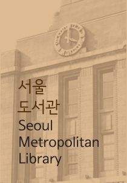 사회과학 Do Epic shit 예슬 Enough already :learning t... 사회과학 Insurgency :how republican... 사회과학 Free :a child and a countr.. 역사 (The) betrayal of Anne Fra... 문학 (The) family Chao 문학 (The) Christie affair 문학 (The) books of Jacob 문학 (The) maid 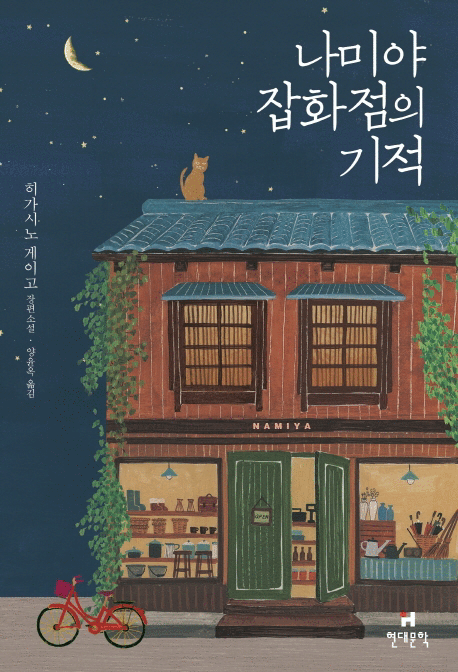 문학 나미야 잡화점의 기적 :히가시노 게이고 장편소설 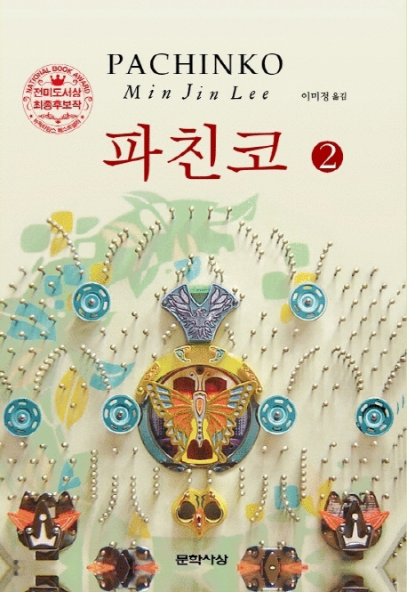 문학 파친코 :이민진 장편소설 .2 문학 채식주의자 :한강 연작소설 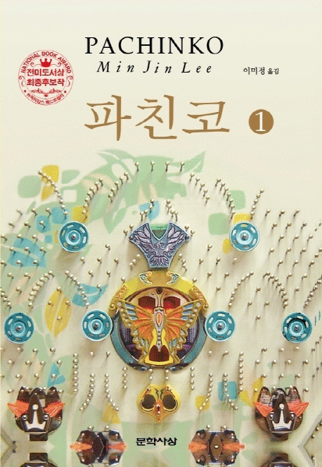 문학 파친코 :이민진 장편소설 .1 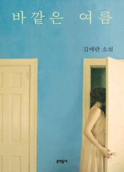 문학 바깥은 여름 :김애란 소설 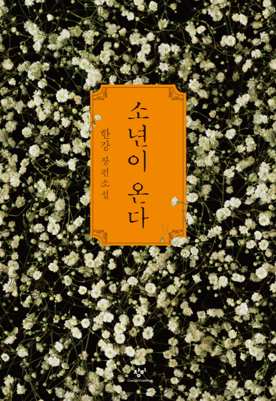 문학 소년이 온다 :한강 장편소설 문학 여행의 이유 :김영하 산문 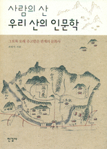 역사 사람의 산 우리 산의 인문학 :그토록 오래 주고... 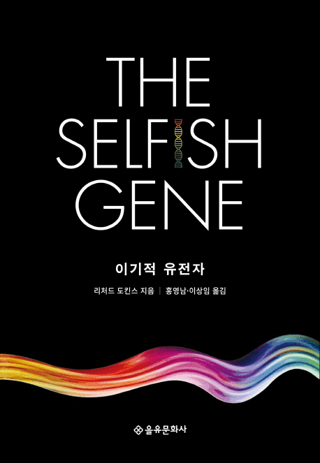 자연과학 이기적 유전자 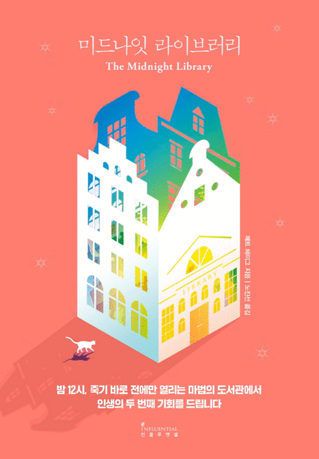 문학 미드나잇 라이브러리 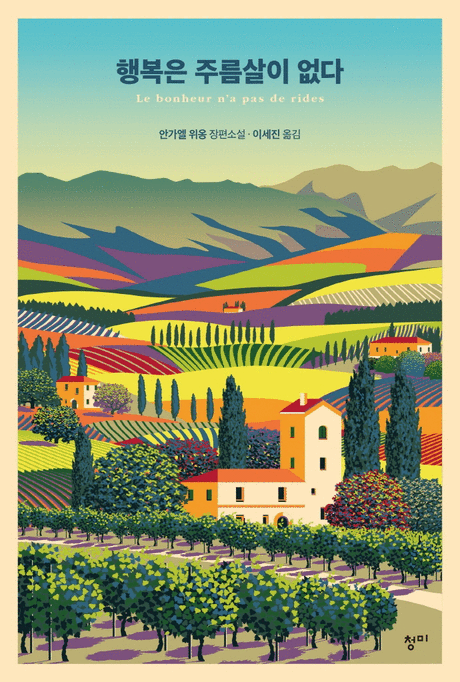 문학 행복은 주름살이 없다 :안가엘 위옹 장편소설 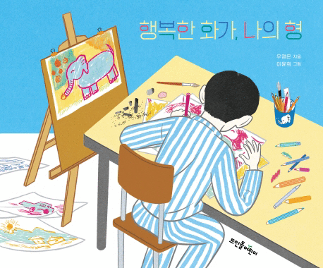 문학 행복한 화가, 나의 형 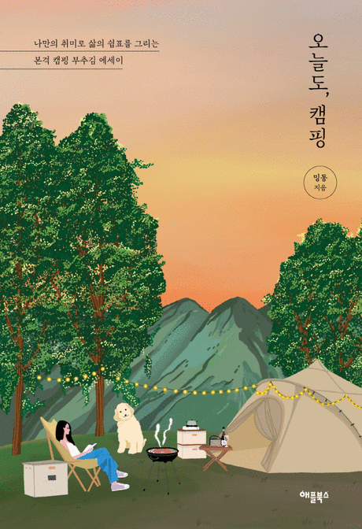 예술 오늘도, 캠핑 :나만의 취미로 삶의 쉼표를 그리... 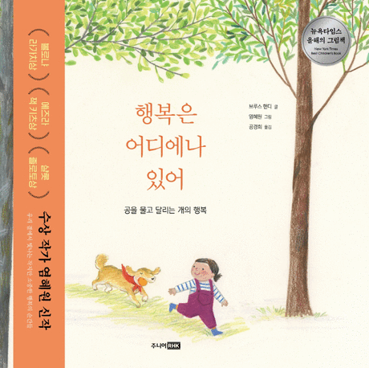 문학 행복은 어디에나 있어 :공을 물고 달리는 개의 행복 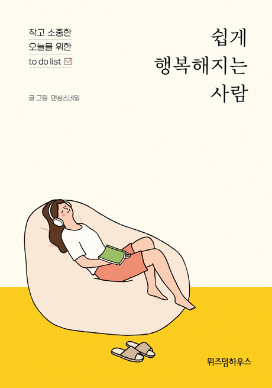 문학 쉽게 행복해지는 사람 :작고 소중한 오늘을 위한... 종교 (The power of) now :a guid... 철학 (The) untethered soul :the... 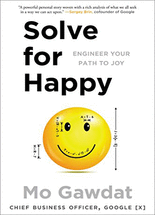 철학 Solve for happy :engineer ... 기술과학 Ikigai :the Japanese secre... 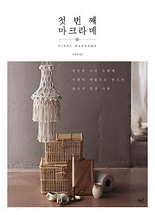 기술과학 첫번째 마크라메 :당신과 나의 소확행, 서양식 ...
달력,그외안내 행사달력 보기 Y E A R 2022 M O N T H 09 D A Y 15 정기휴관일 2022년 9월 19일 월요일 찾아오시는길 전화번호 서울디지털사회혁신센터 서울도서관 X 동네책방 서울문화포털 서울시육아종합지원센터 전자책 도서관 매달 마지막주 수요일 서울 도서관 대출권수 '2배로'확대 서울시민카드앱 사용해보세요! 서울의 가치찾기 시민공모전 순환경제&신사업공모전 신종코로나 바이러스 감염증 예방 행동수칙 서울문화포털 서울시육아종합지원센터 마지막수 수요일 도서관 대출권수 2배로 확대 서울시민카드앱 시민공모전 순환경제&신사업공모전 코로나 감염예방 행동수칙 이전 다음 재생